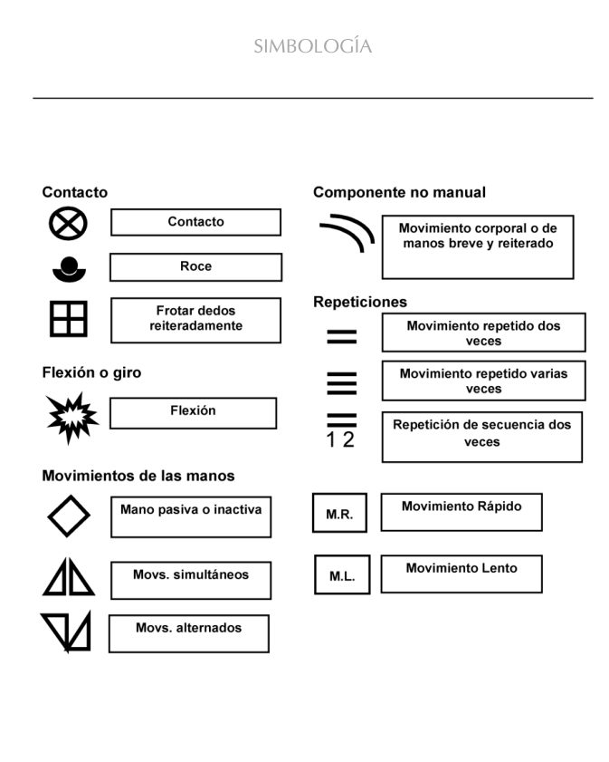
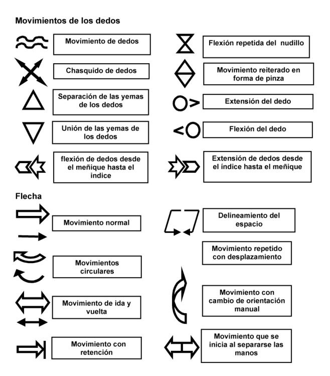

El Mundo de Felipe · Misceláneos
Lengua de señas chilena
Reproductor de glosas con las fotos del Diccionario Bilingüe Lengua de Señas Chilena–Español (UMCE · Acuña, Adamo y Cabrera).
Foto del diccionario
Deletreo (alfabeto manual)
Lámina de pronombres
Seña que subiste tú
Pendiente: no está en el diccionario
Cómo leer las flechas y símbolos de las fotos


Fuentes. Señas: Diccionario Bilingüe LSCh–Español (UMCE). Deletreos: alfabeto manual chileno de LENSE Bío Bío, publicado por BioBioChile. YO y TÚ: lámina «Los pronombres». Uso educativo y sin fines de lucro.
Lo que falta: MI, CON, MUCHO, LICEO, TÉCNICO y el número 51 no aparecen en ninguna de esas fuentes, así que no se muestra nada inventado. Puedes subir una foto o un clip corto grabado por alguien que sepa LSCh; queda guardado solo en este navegador.
TRABAJO usa la foto de TRABAJAR: el diccionario presenta las dos entradas juntas con una sola foto.